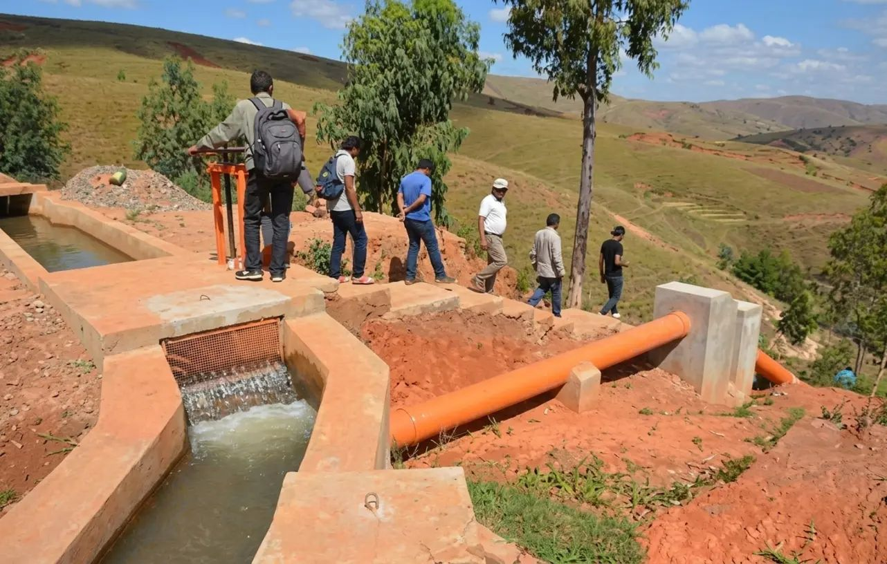

Voyage solidaire : A la découverte de Madagascar, organisé par le CEAS en partenariat avec PRIORI
Il s’agit d’un voyage solidaire, organisé par l’ONG neuchâteloise, le Centre Ecologique Albert Schweizer (CEAS) en partenariat avec PRIORI Antananarivo.

Le séchage de fruits et légumes dans un séchoir solaire thermique développé par le CEAS
Accompagné au départ de Genève, du 2 au 18 octobre 2020, ce voyage hors des sentiers battus vous amènera à découvrir la Grande Ile et sa richesse culturelle. La touche d’originalité de ce voyage solidaire à Madagascar : la visite de projets de développement du CEAS, mais également d’autres organisations actives dans le domaine.
Ce voyage s’adresse à toute personne intéressée à connaître Madagascar, la « Grande Ile », sa culture, ses paysages très contrastés, ainsi que les activités de développement d’une ONG suisse. Vous bénéficierez de visites agréables adaptées à vos qualités de marcheur plus ou moins averti.
Des séances d’information seront organisées pour la préparation de ce voyage.

Dans un cadre magnifique, le canal primaire et le début de la conduite forcée d’installations de production hydroélectrique pour 3 villages de la région de Sarobaratra
Découvrez ici le détail du voyage !
Si les dates ne vous conviennent pas, mais qu’un tel circuit vous intéresse, n’hésitez pas à nous contacter pour un voyage sur mesure à Madagascar à une autre période !
Chaque voyage est planifié et organisé en étroite concertation avec vous. Contactez-nous à tout moment pour plus d’informations, planifier votre voyage ou pour toute question concernant Madagascar.